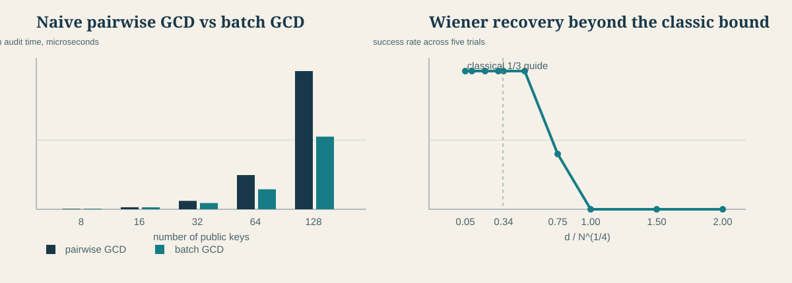

SC6104 CRYPTOGRAPHY COURSE PROJECT
Breaking
Weak RSA Keys
Two controlled attacks show why large moduli cannot compensate for faulty key generation.
Shared prime reuse
gcd(N₁, N₂) = pSmall private exponent
d < N^(1/4) / 3Threat model
The attacker receives public keys only
- Known to attackerRSA moduli N and public exponent e from a controlled local key set.
- Not attemptedNo generic factorization of a correctly generated 2048-bit RSA modulus.
- GoalRecover the private key only when an implementation makes a specific error.
Shared-prime attack
Faulty randomness can reuse one secret prime across two public moduli
N₁ = p × q₁same pN₂ = p × q₂same pgcd(N₁, N₂) = p
Knowing p gives q, φ(N), and then d
Live demonstration
The attack program sees only public parameters
- Generate four 2048-bit public keys
- Reuse one prime in exactly two keys
- Compute gcd for each public-key pair
- Reconstruct d and decrypt the message
gcd scan found 1 vulnerable pair Recovered plaintext: RSA keys need independent primes
Wiener's small-d attack
A private exponent chosen too small creates a continued-fraction shortcut
e × d − k × φ(N) = 1When d is small, k / d approximates e / N
continued fractions produce candidate values for d
We verify candidates by reconstructing p and q
Second live attack
A 2048-bit modulus still fails when d is intentionally tiny
N, ek / dd, p, qThe demo verifies the recovered d by decrypting a second message
Audit scale and attack boundary
Both experiments use only locally generated vulnerable RSA keys

Batch GCD overtakes pairwise scanning as the key collection grows.
Wiener recovery remains possible beyond the classical one-third guide in some trials, but the success rate becomes unreliable.
Run python3 -m experiments.run_advanced_experiments to regenerate results.
Large RSA keys still need correct generation
- Use reviewed librariesAvoid custom key-generation code in production systems.
- Use a CSPRNGIndependent entropy prevents repeated primes across keys.
- Avoid manual d selectionRSA parameters require validated mathematical constraints.
Key length protects against generic factoring. It cannot repair flawed randomness or unsafe parameters.